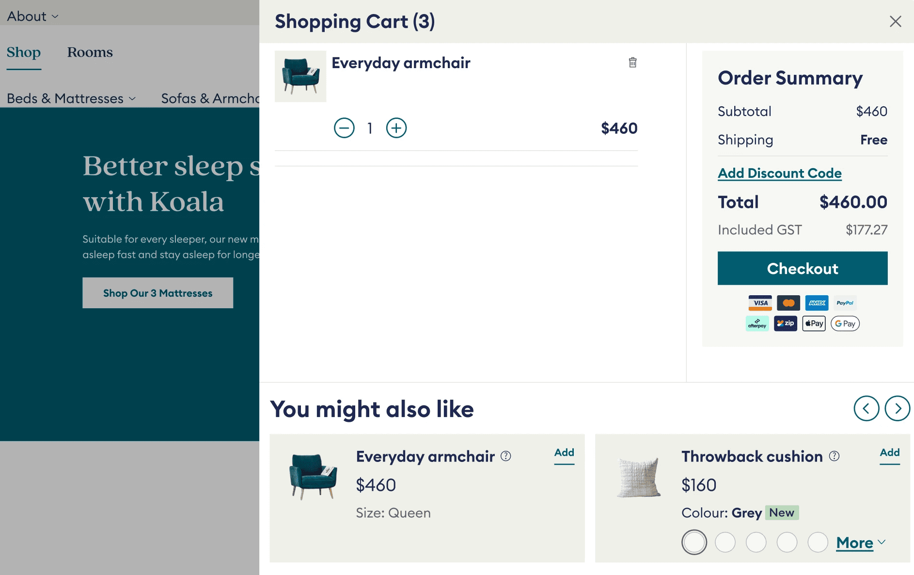
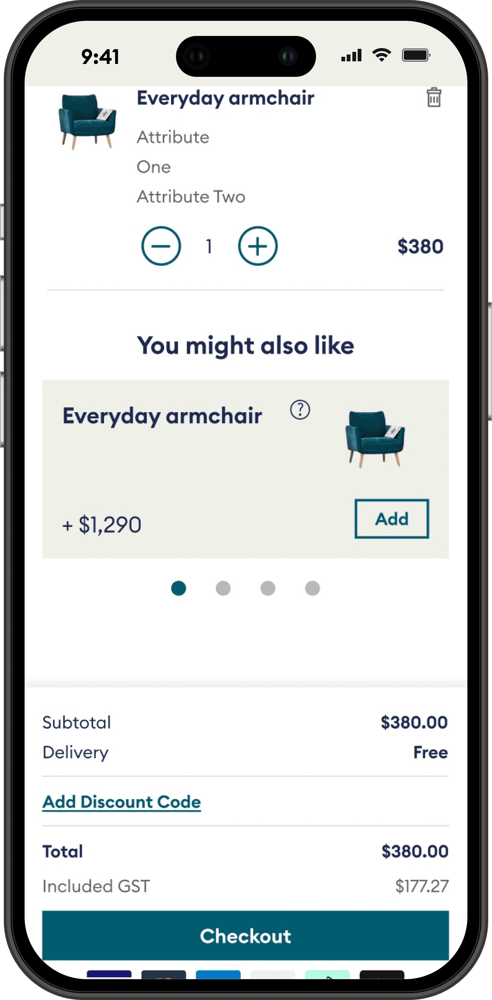
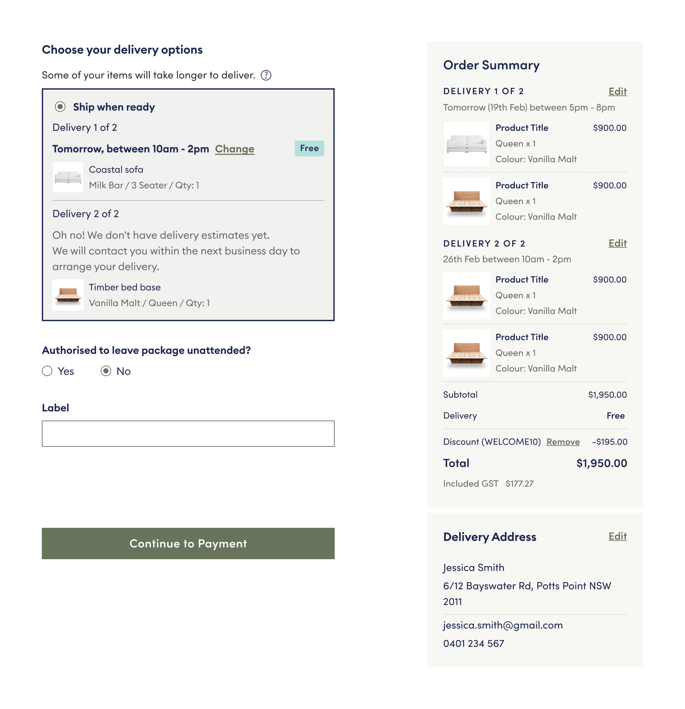
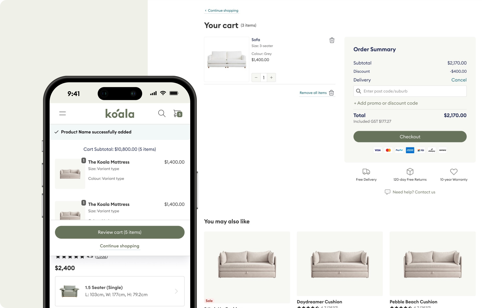
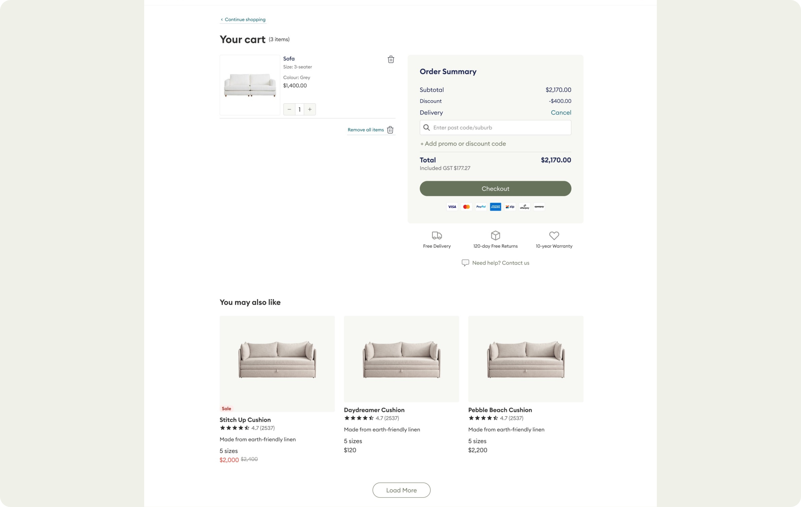
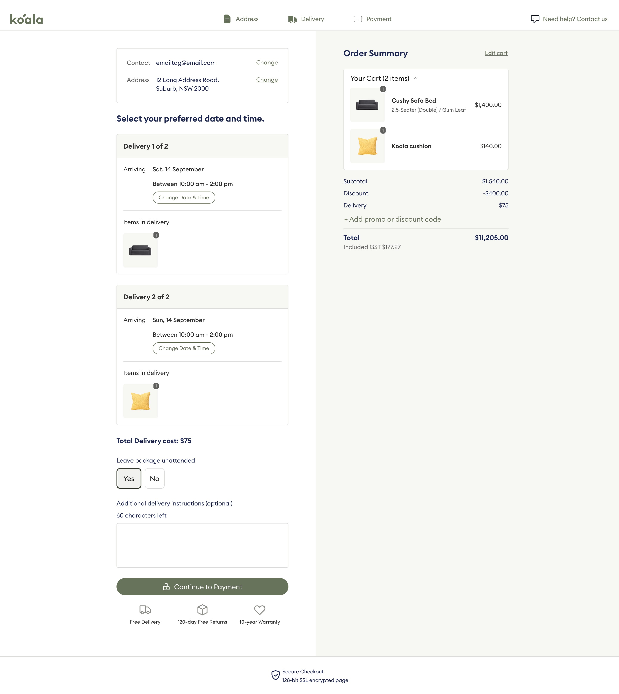
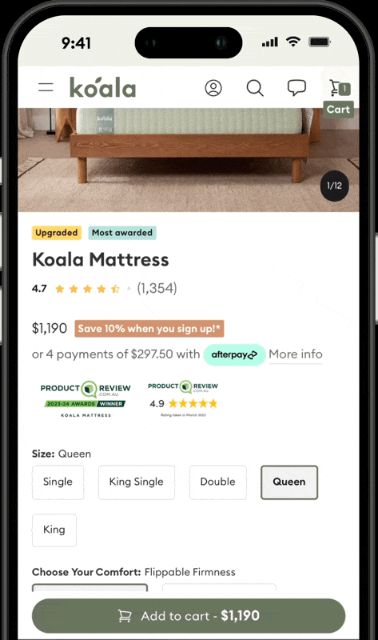

Understand where the journey breaks down
The original project focused on Koala's purchasing journey, from cart through delivery selection and checkout. The work combined quantitative funnel analysis with qualitative review to identify friction in the existing experience.
The objective was not simply to modernise the interface. It was to make purchasing clearer and reduce unnecessary effort between cart and payment.

Turn observed friction into design hypotheses
The original case study separates issues in the cart, mobile purchasing experience and checkout. The images below document the existing screens that informed the redesign. Precise research quotes and diagnostic figures still need to be transcribed from the Framer source.


Redesigning the cart and checkout
The solution brought the purchasing flow into a more coherent visual system, with clearer cart summaries, purchase actions, delivery choices and a more consistent experience across devices.




Improving purchase performance
The historical portfolio describes a one-month A/B test and reports improvements at several stages of the purchasing journey.
The earlier CV separately reports approximately +12% sitewide conversion and +20% average order value for Koala cart and checkout work. Those figures are intentionally kept separate until their measurement periods and scope can be reconciled.
What still needs checking
The visual assets are original exports from the Framer project. Captions describe what is visible, not unverified implementation details.
Sources: Original Koala purchasing-flow full-page screenshot, Framer asset export and pre-Mable CV. Original project ↗